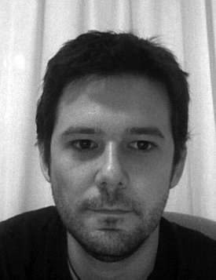

I love building things and creating products that people will use, that's why I work as a web developer.
When working I hate to waste my time so I constantly look for the most productive tools to get things done.
My current tools of trade are mostly Ruby and Rails, but I am always eager
to learn anything that can improve my workflow.
- Experience
-
Freelance Web developer June 2011-Present
- Co-authored an article on Practicing Ruby about actor based concurrency with Celluloid.
- Contributor to the Reel project a web server based on Celluloid and
Cellulloid::IO
- Development of websocket_parser a rubygem to parse frames in
the Websocket protocol.
- Development of Alondra, an open source push notification framework.
- Design and development of Witicus.com a online learning platform (Currently not maintained).
Qoolife.com Web developer November 2010-June 2011
- Front and backend development for a health social network.
- Involved complex data modeling in Ruby as well as sass editing and html layout.
- Technologies involved: Ruby, Ruby on Rails, Haml, Sass, Compass, RSpec, Capybara, Sphinx, Capistrano, Amazon Web Services.
RTVE.es Engineer January 2008-November 2010
- Design of a Restful API to distribute RTVE.es content to mobile applications, connected TVs and third party partners.
- Architectural design and first implementation of Weather portal for RTVE.es.
- From June to October 2010 managing development of RTVE mobile applications.
- Developed ClanTV Application for iPhone.
- News application for the Android Platform.
- Reimplemented previous version of RTVE's la Carta video portal with a custom version for video consoles and TVs.
Physics and Math teacher 2006-2007
- Tutoring high school and undergraduate courses.
- Teaching at Centro de Formación Delfis.
- Core Skills
-
- Ruby and Ruby on Rails development. Design of Restful web services.
- Frontend development: JavaScript, jQuery, Backbone, css3 and sass.
- Objective-C development for Mac OS and iPhone OS.
- Agile methodologies. Scrum. Extreme Programming. Test Driven Development.
- JEE development: Spring, Hibernate, JPA, Grails.
- Education
-
- Interfaces Amigables course about designing user friendly UI
June 2011
- Ruby Mendicant University Teaching Technology Course
February-March 2011
- Ruby Mendicant University Core Skills Course September 2010
- Sun Certified Java Programmer 2007
- Degree in Physics, University of Granada 2006